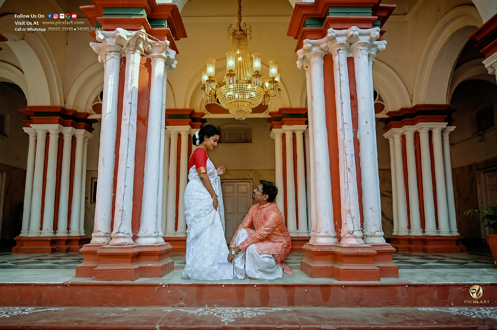
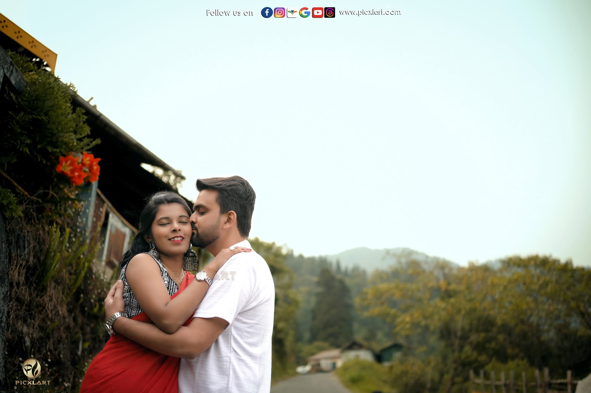
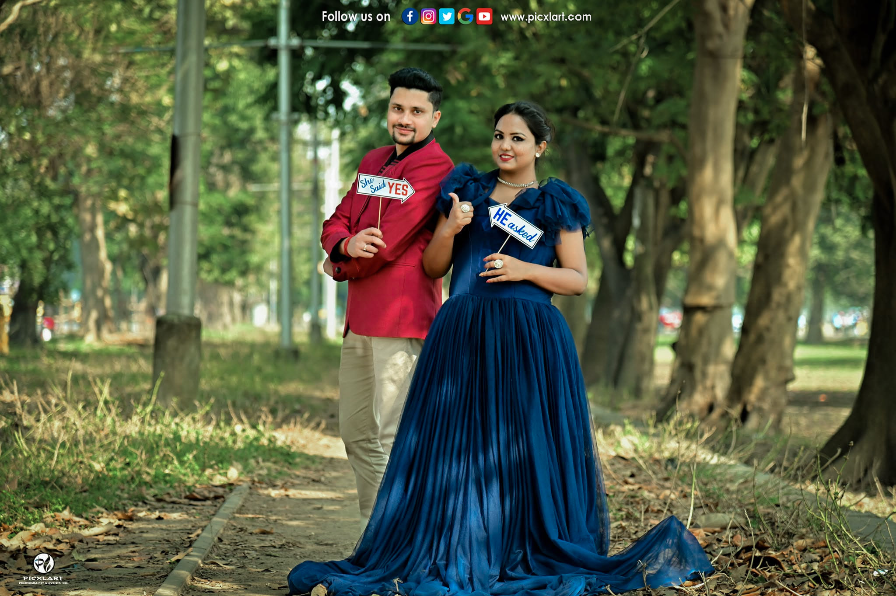

Every couple aspires to have an extraordinary pre-wedding photoshoot that isn't just about taking pictures, but rather a reflection of their beautiful love story. Choosing the right wardrobe plays the most pivotal role in striking the perfect balance between style, comfort, and theme coordination. At Picxlart Photography, we guide our couples to feel relaxed and connected in front of the lens.
Here are the top 15 outfit ideas and wardrobe choices that will make your pre-wedding photoshoot look timeless, cinematic, and truly unforgettable.
Top 15 Wardrobe & Outfit Ideas For Couples
1. Classic Saree and Kurta Combo
When in doubt, classic ethnic wear is usually the most excellent option. Traditional sarees for the bride and neatly tailored kurtas for the groom carry their own inherent cultural charm. Choosing to anchor your romantic portraits in traditional roots highlights how much you value heritage, while providing a royal and elegant look against heritage backdrops.
2. Cozy Winter Attire
If your pre-wedding photoshoot is scheduled during the chilly winter months, cozy winter wear offers a touch of warmth and intimacy. Wearing stylish trench coats, woolen sweaters, or cozy cardigans allows your chemistry to shine through naturally. This style combines sophistication with understated drama, making it a very popular choice for morning mist shoots.
3. Casual Everyday Wear
Going for casual pre-wedding attire is ideal if you want your pictures to feel authentic to how your love story began. Simple jeans paired with casual tees, hoodies, or stylish shirts make couples feel instantly relaxed. This relaxed vibe removes camera stiffness and captures genuine, unscripted candid smiles during outdoor walks or cafe dates.

4. Color Matching Outfits
Wearing matching colors or complementary color tones is a fun way to demonstrate your excellent chemistry as a couple. Twinning in pastel shades or matching a specific color element shows how strong and connected you are together. It brings visual symmetry to the camera frame and highlights your unique bond as a pair.
5. Glamorous Gown and Tuxedo
For couples dreaming of a high-fashion, fairy-tale photoshoot, a sweeping evening gown paired with a sharp tuxedo is the ultimate choice. A long train gown catching the breeze adds breathtaking motion to sunset shots, while the groom in a black-tie suit commands elegance. This pairing is perfect for luxury resorts, riverfronts, and grand architecture.
6. Velvet Royal Outfits
Rich velvet fabrics carry a natural sheen and deep texture that photograph with extraordinary luxury on camera. A velvet lehenga or a rich velvet sherwani and bandhgala coat adds instant royalty to your portraits. Under golden sunlight or warm evening lights, velvet creates dramatic highlights and deep rich shadows.
7. Flowy Chiffon or Georgette Dresses
Lightweight fabrics like chiffon, georgette, and organza add effortless movement to romantic couple photography. When the bride spins or walks along open lawns, the fabric catches the wind, creating dynamic and dreamy frames. It is particularly recommended for natural outdoor spots, beaches, and lakeside photoshoots.

8. Traditional Dhoti-Panjabi & Kanjivaram Silk
To capture traditional Bengali bonedi romance, nothing surpasses a rich Kanjivaram or Tussar silk saree paired with a traditional Dhoti-Panjabi. The intricate zari work on the saree and the graceful drape of the dhoti evoke nostalgia. This combination looks mesmerizing in historic Rajbaris, courtyards, and river ghats.
9. Retro Vintage Look (1970s Style)
Recreating a retro vintage aesthetic brings a nostalgic, cinematic storytelling feel to your pre-wedding album. Polka dot dresses, high-waisted trousers, vintage oversized sunglasses, and classic hair styling pair wonderfully with locations like tram museums or old city alleys. It gives your photos a timeless romantic movie vibe.
10. Pastel Soft Palette Essentials
Soft pastels like Blush Pink, Mint Green, Powder Blue, and Cream create a soft, clean aesthetic in natural light. These subtle hues sit gently in outdoor greenery and morning sunlight without clashing with the environment. They keep the complete visual focus centered on the couple’s facial expressions and emotional connection.
11. Semi-Formal Blazers and Cocktails
Semi-formal outfits offer a sophisticated middle ground between casual wear and heavy traditional attires. A stylish cocktail dress for the bride and a fitted blazer over chinos for the groom work for evening cityscapes and cafe shoots. It reflects a modern, urban lifestyle while keeping the look smart and trendy.

12. Floral Print Delights
Fresh floral prints on sarees, maxi dresses, or even men's casual shirts bring a joyful, vibrant energy to outdoor shoots. They add playful textures to morning garden sessions or park walks. Keeping the prints soft and artistic ensures that the photos look cheerful without feeling overly cluttered.
13. Bold Jewel Tones for Heritage Backdrops
Jewel tones like Emerald Green, Ruby Red, Sapphire Blue, and Deep Mustard stand out magnificently against old stone walls and red-brick Rajbaris. These saturated colors pop out vividly against neutral backgrounds, giving your photos a royal, high-contrast, and striking artistic appeal.
14. Layered Accessories and Jackets
Adding layers like a chic jacket, a stylish dupatta drape, or a scarf instantly gives you two different looks in a single outfit. Layers add depth and texture to photos, allowing the photographer to capture various posing options. It keeps the wardrobe versatile without needing time-consuming full outfit changes.
15. Comfortable Footwear & Smart Shoes
Footwear is often overlooked, but it plays a crucial role in maintaining your confidence and body posture during a long shoot. While leather shoes and heels look stunning in photos, carrying a pair of comfortable flats or sneakers to walk between locations is essential. Comfortable feet keep your smiles genuine throughout the session.
Ready to Capture Your Love Story?
At Picxlart, we turn your romantic moments into cinematic visual stories. Based in Hooghly, we serve across Kolkata, West Bengal, and Destination Weddings Pan-India.
BOOK YOUR PRE-WEDDING SHOOT